| July 11 | ||||
Tony Cork releases one of his famed "Eefus" pitches on Friday night. Cork picked up his 5th win of the year allowing 2 runs in 5 innings. |
Joe Trimble made his debut Friday night with a 1-for-11 effort. |
Carter Thorlton watches one of his three triples on Friday night. Thorlton finished 5-for-12 in the game. |
Patrick Cork watches his homerun sail into left field Friday night. The homer was Patrick's 18th of the season. |
Tony Cork connects on an RBI single in the first inning on Friday night. Cork went 3-for-11 in the game.
|
| July 12 | ||||
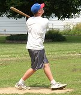 Chris Wakefield rips one of
his 5 homeruns in game one on Saturday. Wakefield finished his debut 9-for-13
with 5 homers and 9 RBI. |
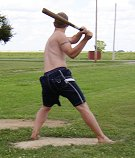 Josh Williamson fouls off of a pitch from Chris Wakefield in game one on Saturday. Williamson was 3-for-13 with a homer in the loss. |
Willy Truitt picked up the win in his debut firing 9 innings and allowing just 2 runs on 8 hits while striking out 9. |
Chris Wakefield won his first start despite allowing 8 runs on Saturday in windy conditions. He struck out 9 and allowed 11 hits in the win. |
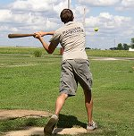 Willy Truitt got the scoring started with his solo homerun in the 3rd. Truitt finished his debut 2-for-13 in the win. |
| July 19 | ||||
Greg Howard made a successful return to Corklestick by firing a 4-hitter on Saturday. Howard picked up the win allowing just one run and striking out 6. |
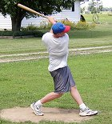 Chris Wakefield set a single-game strikeout record on the mound striking out 20 batters on Saturday, however, he suffered the loss allowing 2 runs on just 4 hits. |
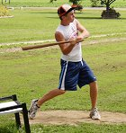 Jake Hoalt connects on an RBI double in the 7th inning of game one. |
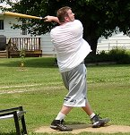 Dustin Waldrop connects on a solo homerun in game two of the doubleheader Saturday. Waldrop was 2-for-11 in the game. |
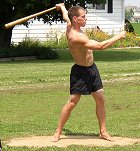 Greg Howard rips a single to center field on Saturday. Howard sparked the only rally his team had in game one with a leadoff single and scored on Dan Inboden's homerun. |
Tony Cork moved his record to 6-0 on the season allowing three runs on 5 hits in six innings of work in game two. Cork's ERA now sits at 1.96. |
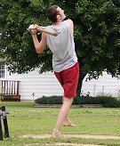 Patrick Cork pops out in game two of the doubleheader. Cork was just 5-23 on the day to drop his average to .362, but hit his league-leading 24th homerun in the win. |
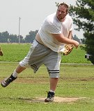 Dustin Waldrop suffered the loss in game two of the doubleheader allowing 6 runs in 7 1/3 innings of work. |
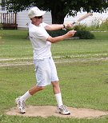 Tony Cork hit his first homerun of the year in game two on Saturday. Cork finished the game 8-for-13 and moved his average to .357 on the year. |
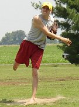 Patrick Cork picked up his 3rd save of the year pitching the final 3 innings and allowing just one hit in game two. Cork has allowed just 2 earned runs in 19 innings this year (0.95 ERA). |


Back to Baseball